Sam's Guest House
About this Space
Bar
A bar complete with seating for four is a cozy place to hang out on those days the weather is less then perfect.
Dining Room
The kitchen consists of a galley prep space, an island with cooktop and dining table as well as a wall of full height cabinets. The colour blocking of the dining table and upper cabinets creates a linear geometric aesthetic while the contemporary light offers a more exploded geometry.
Living Room
The family room features a double sided couch with seating deep enough that each position could easily be considered a chaise and what better way to watch TV then from a chaise lounge. When not watching TV or enjoying the fire, the seating on the other side offers a casual connection to the kitchen just beyond.
Upstairs Living Room
Upstairs, the formal living room is just as comfortable but features furnishings in a more tailored style. While the family room below opened to the courtyards, the upstairs living room opens to a large terrace that exposes the brilliant blue hues of St. George's Bay.
Bedrooms
At the end of the day when its time to turn in, the bedrooms are located to continue the panoramic views so the homeowners can get one last look at the views before turning in.
Office
A small office area is located next to the formal living room and next to a window. It makes the perfect spot to catch up on reading material whether through newspaper, magazine, book or laptop. 3 small sculptures on the shelving behind the office desk continue the theme of floating rings.
Terrace
Outside on the terrace drought resistant grasses soften up the hard lines of the concrete while tempered glass railings offer an unobstructed ocean view both into the distance and along the shoreline.
Bathroom
Just past the tub is a large and luxurious shower stall complete with two rain showers. Doors at either end lead back to the bedroom or into the dressing area.
What this place offers
Wifi
TV
Air Conditioning
Free Car Parking
 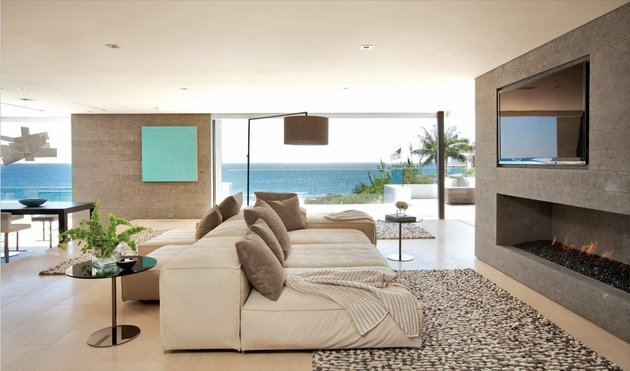
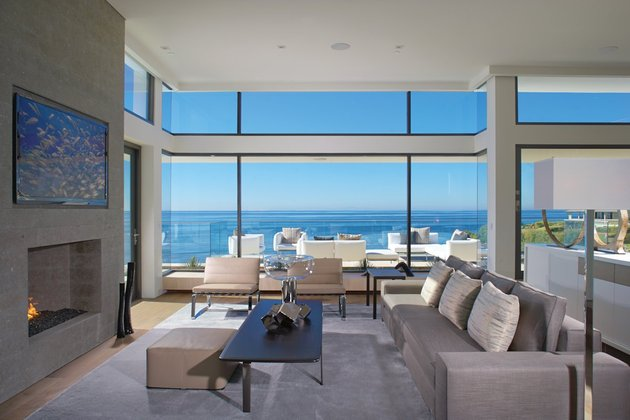
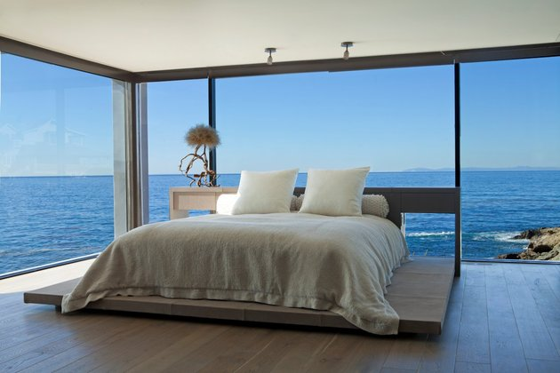
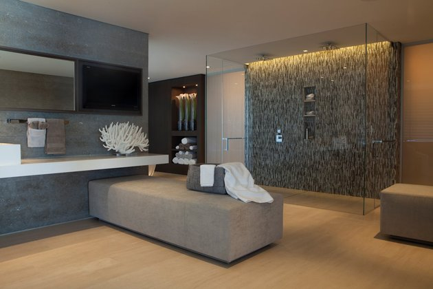
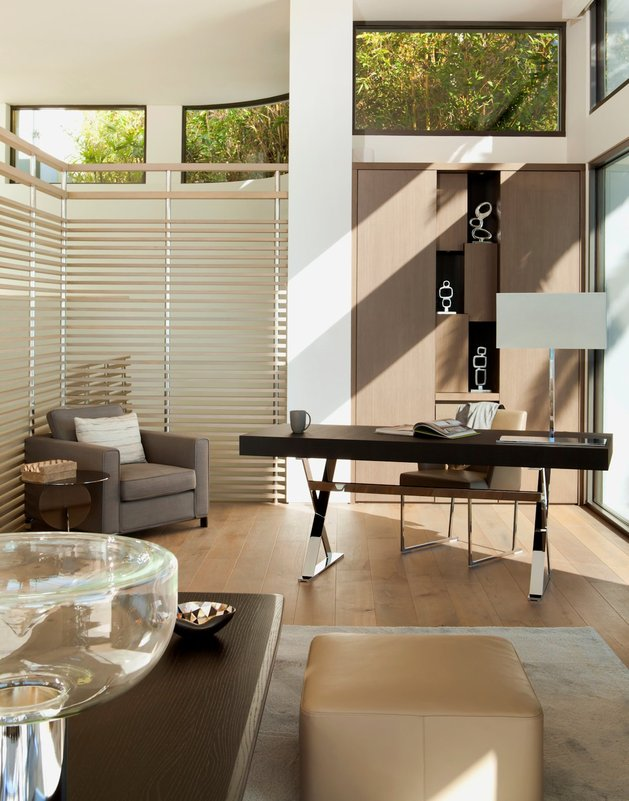
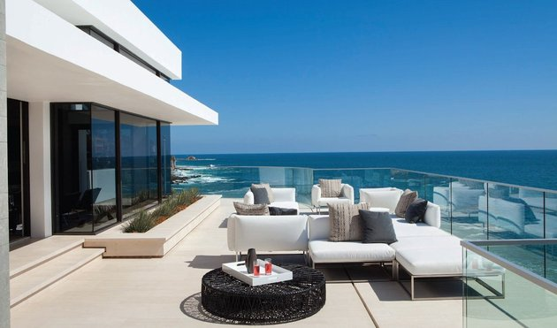
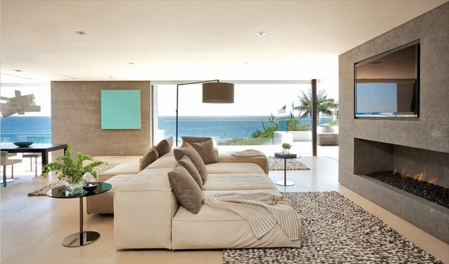
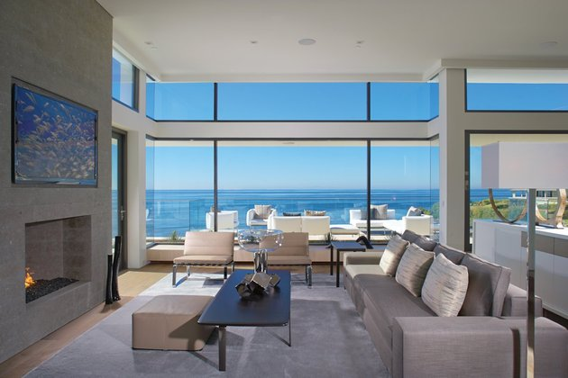
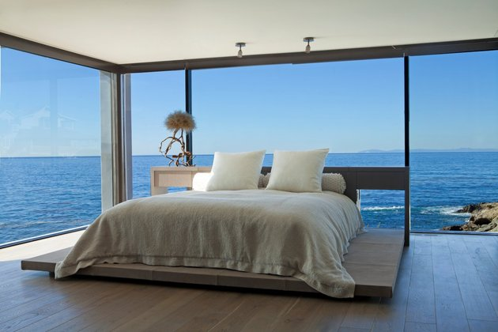
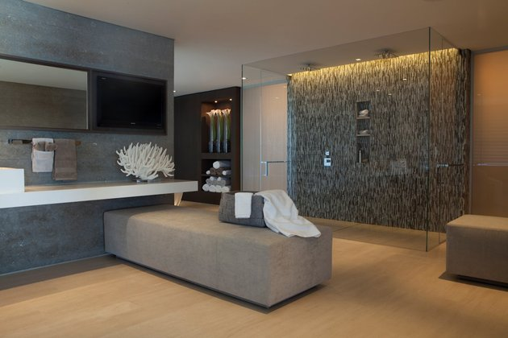
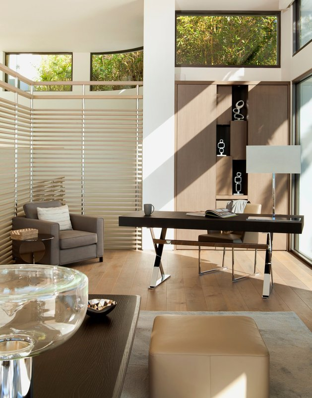
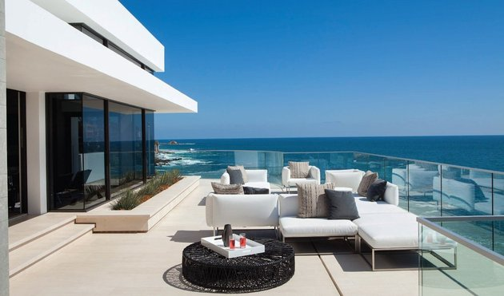